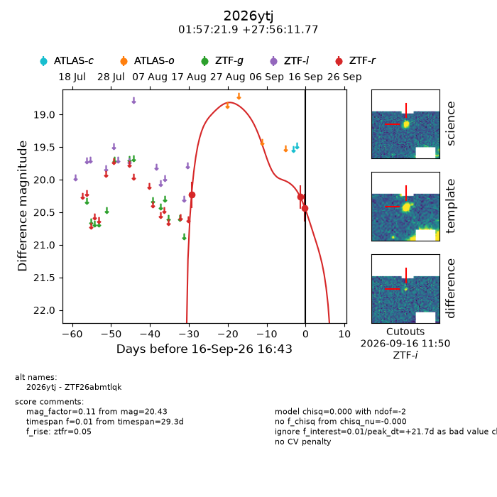
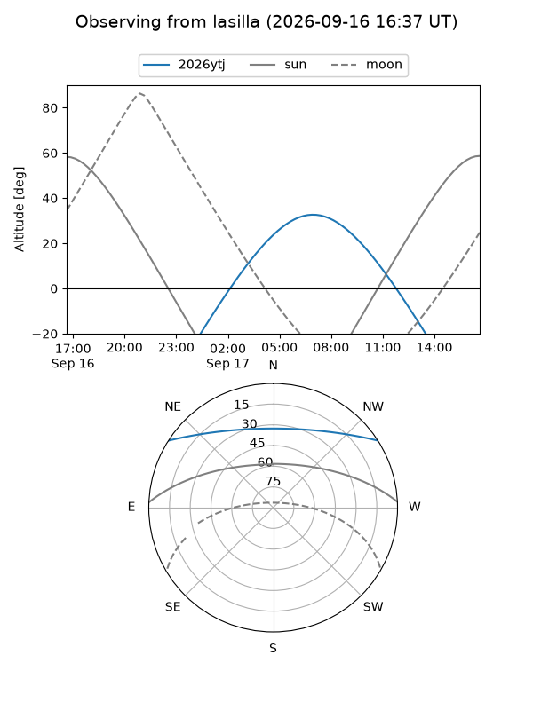
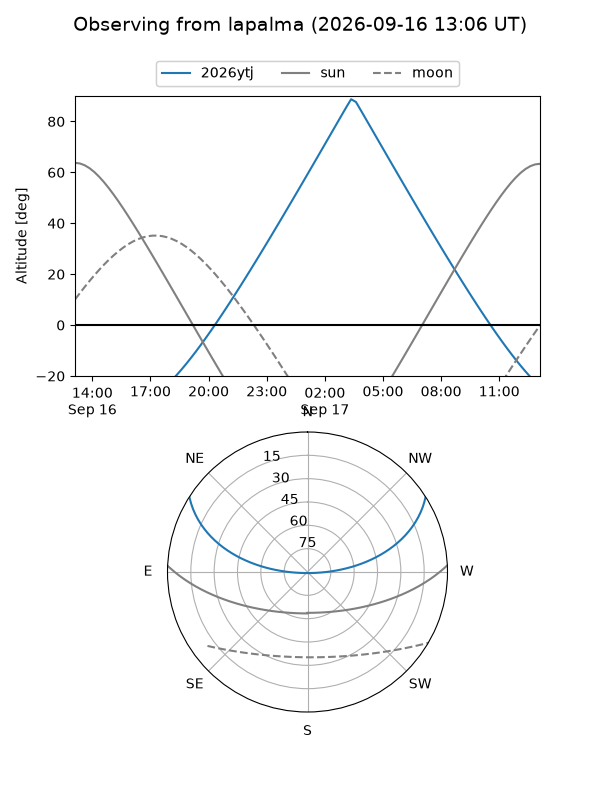
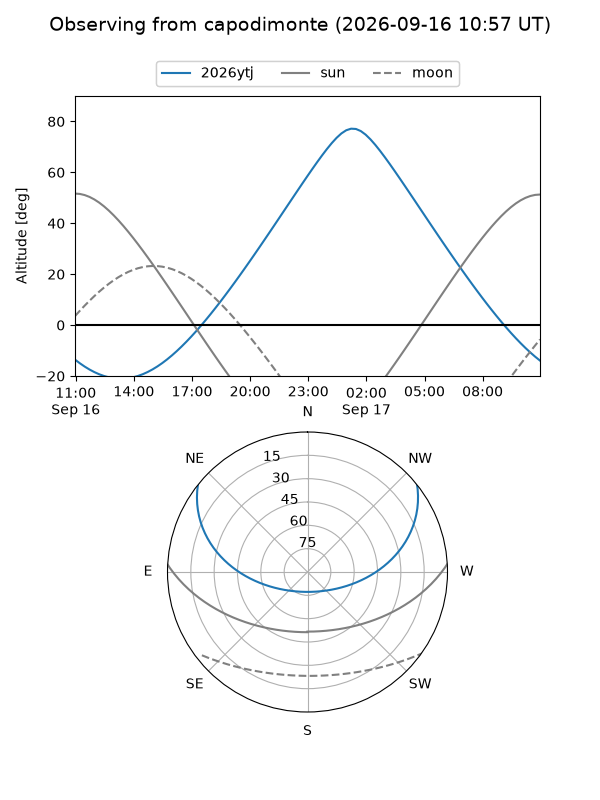
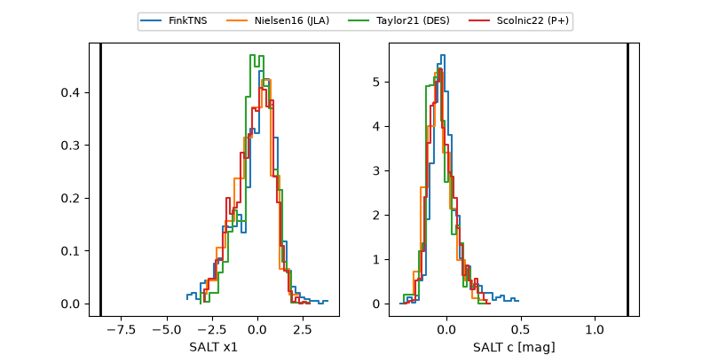

2026ytj
Target 2026ytj at 2026-09-16 16:45
Aliases and brokers:
FINK-ZTF: ztf.fink-portal.org/ZTF26abmtlqk
Lasair-ZTF: lasair-ztf.lsst.ac.uk/objects/ZTF26abmtlqk
ALeRCE-ZTF: alerce.online/object/ZTF26abmtlqk
YSE-PZ: ziggy.ucolick.org/yse/transient_detail/2026ytj
TNS name: wis-tns.org/object/2026ytj
Direct TNS query: direct search
alt names
ZTF26abmtlqk (ztf,fink_ztf)
2026ytj (tns,yse)
Coordinates:
equatorial (ra, dec) = 29.3414,+27.93660
equatorial (HMS+DMS) = 01:57:21.93,+27:56:11.77
galactic (l, b) = (140.2623,-32.70681)
Flags:
TNS type: nan
peak dt: +21.7
Photometry:
last ztfr=20.43
3 ztfr detections
Lightcurve

Visibility



Additional plots
